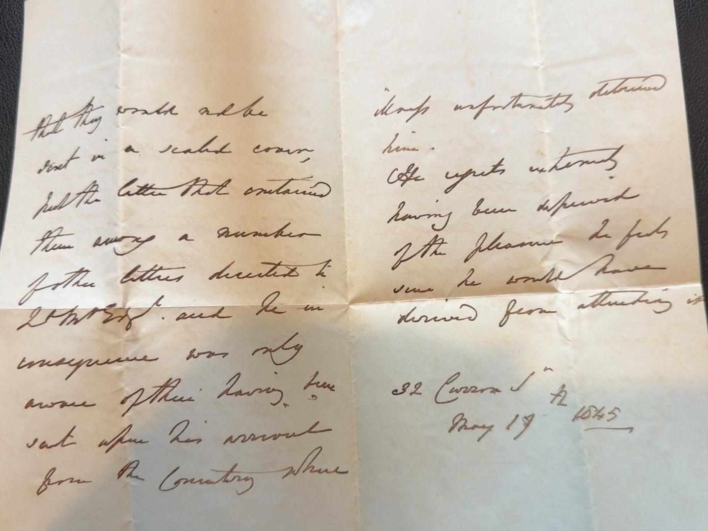
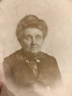
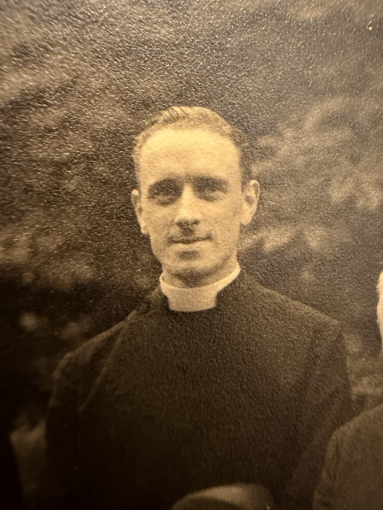
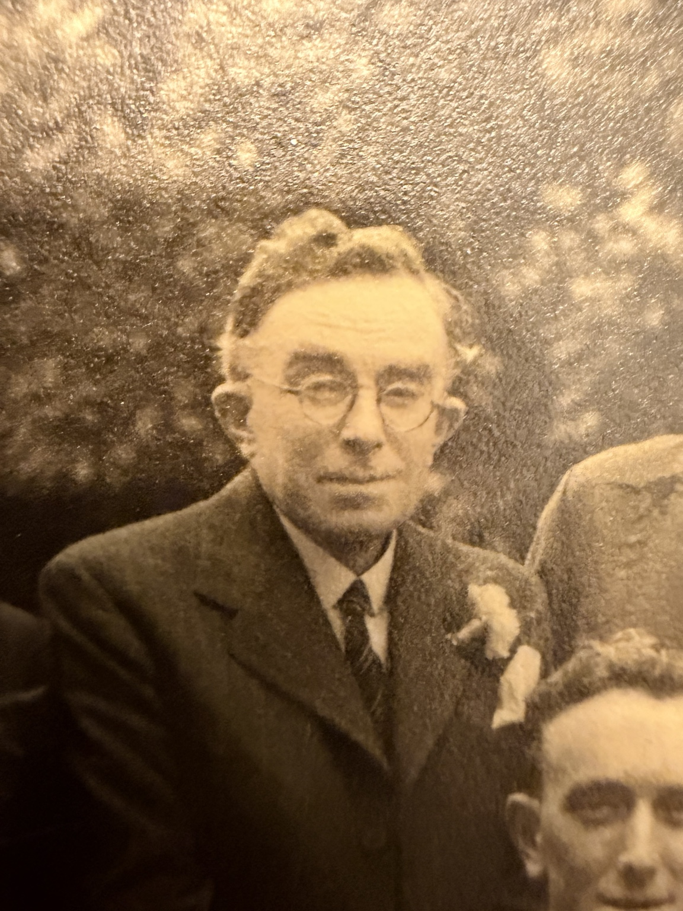

Photographs & original documents
Browse the historical photographs and original manuscript scans currently confirmed in GitHub. Every image below is stored in the website's own images/ folder and links to the associated biography or research record.





Records awaiting scans
Additional submitted photographs of Mendelssohn's letters to Maria Hawes, the handwritten Hawes–Day birth and death register, and the family memorial cards have already been transcribed and catalogued, but their photo files are not yet published in the repository. Their accompanying research is available at the Mendelssohn letters, the Hawes family register and the memorial cards.
Mary Hawes

Mary Hawes, identified by Antony Greenfield as Walter Joseph William Hawes’s mother. This identification does not resolve the Ellis/Fisher maiden-surname discrepancy in the family records.
View original photograph →William Edward Wilson Hawes

William Edward Wilson Hawes, identified by Antony Greenfield. The date, location and photographer have not been established.
View original photograph →Walter Joseph William Hawes

Identified by Antony Greenfield as Walter Joseph William Hawes. Original supplied photograph, displayed without restoration. Date and photographer unconfirmed.
View original photograph →George Walter Hawes

Identified by Antony Greenfield as George Walter Hawes. Original supplied photograph, displayed without restoration. Date and photographer unconfirmed.
View original photograph →Mary and Madeline Hawes

Identified by Antony Greenfield as Mary and Madeline Hawes. Original supplied photograph, displayed without restoration. Date and photographer unconfirmed.
View original photograph →Mary Frances Hawes

Identified by Antony Greenfield as Mary Frances Hawes. Original supplied photograph, displayed without restoration. Date and photographer unconfirmed.
View original photograph →Mary Frances Hawes

Identified by Antony Greenfield as Mary Frances Hawes. Original family photograph displayed as supplied, without restoration. Date and photographer unconfirmed.
View original photograph →Frances Ellen “Nellie” Creese Hawes

Identified by Antony Greenfield as Frances Ellen “Nellie” Creese Hawes. Original family photograph displayed as supplied, without restoration. Date and photographer unconfirmed.
View original photograph →